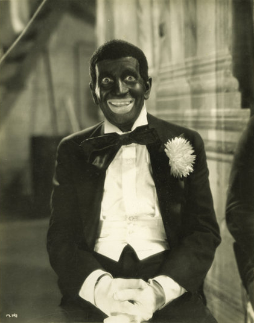
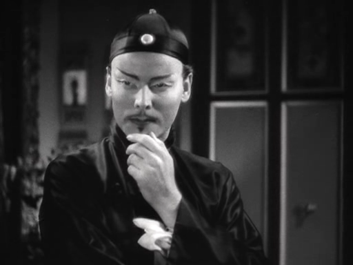
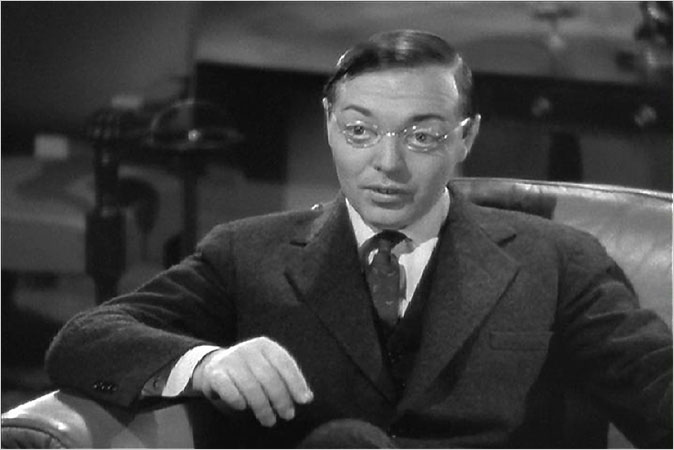
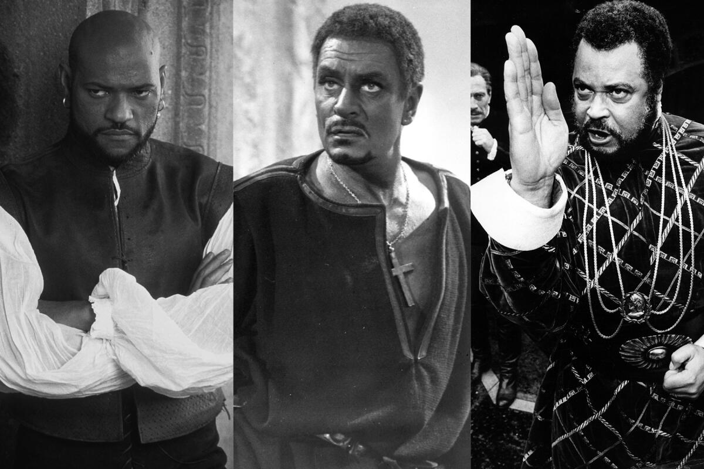
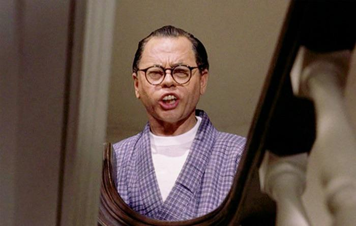
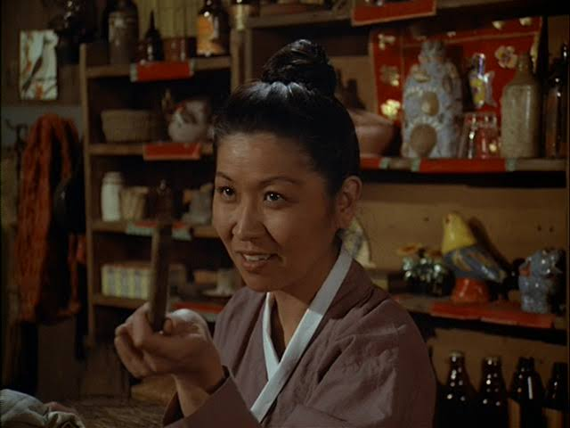
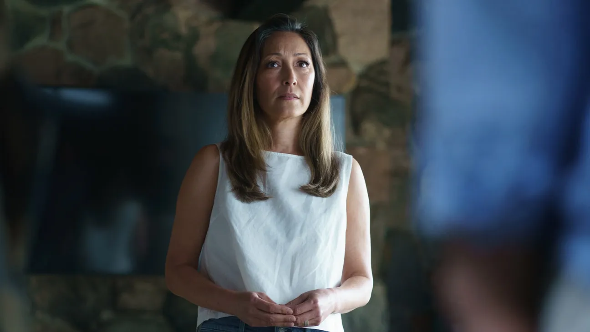

Hollywood has a history of casting actors to play races other than what they are. Rooted in racism, anti-miscegenation laws, lack of care, and at times straight-up corporate greed, these portrayals have existed since the very beginning of film, all the way to the modern day.

White actor Al Johnson in blackface.

White actor Nils Asther in yellowface (portraying a Chinese character).

White Actor Peter Lorre in yellowface (portraying a Japanese character).

White Actor Laurence Olivier in blackface.

White Actor Mickey Rooney in yellowface (portraying a Japanese character).

Eileen Saki, a Japanese-American Actress, portraying a Korean woman.

Hudson Williams, a Korean-Canadian actor, portrays a Japanese-Canadian character in the show Heated Rivalry.

Christina Chang, a Taiwanese-American actress, portraying a Japanese-Canadian character.
In the case of actors portraying ethnicities not of their own, it becomes a bit more of a mixed bag whether or not it's worthy of criticism. In the case of Heated Rivalry, William's character being Asian, while important, is not exactly central to the story. On the other hand, in the show M*A*S*H, Saki's character Rosie being Korean is extremely important for her characterization. As a Korean woman being affected by the horrors of the Korean War, the role requires an understanding of the Korean culture and perspective-it requires a native portrayal.
Every choice when it comes to casting actors outside of either their race or ethnicity is something that should be discussed. Sometimes it is a reasonable decision. Sometimes it is not.
Emma Stone, a white actress, portraying a mixed-race woman of Asian and Hawaiian descent.
Scarlet Johansson, a white actress, portraying a Japanese (while a robot, the character is meant to be from Japan, and has a Japanese name) character.
These are modern cases in which white actors are chosen to portray races they are not-a completely different discussion from the one above. This is not acceptable, but it is still happening.